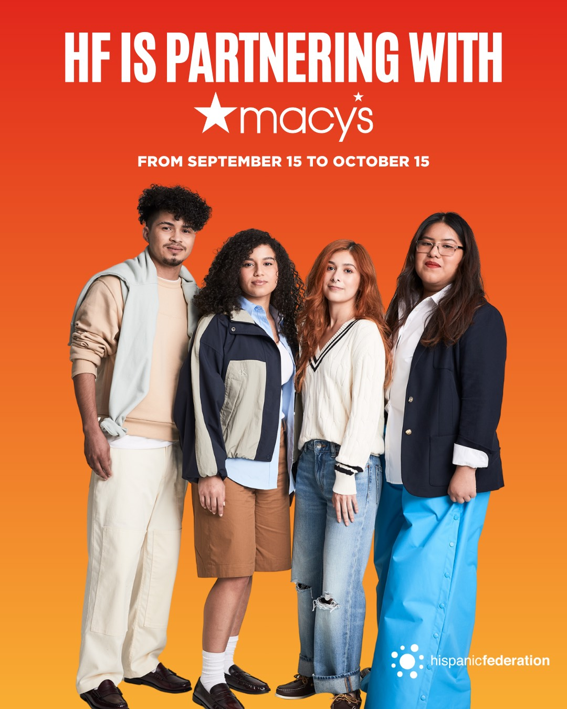

At SUNY Old Westbury, Isai learned about CREAR Futuros empowered by Hispanic Federation, a peer-support program dedicated to helping Latinx students pursue higher education. He first joined the program as a mentee for two years. Then, he became a mentor himself.
Through CREAR Futuros, he met Adam (B.A. in Hispanic Literature and Culture), Lola (B.A. inPsychology), and Juliana (B.A. in Finance), and Maribel C. (CREAR Futuros Liaison). They became close friends.
CREAR Futuros gave Isai a sense of purpose. He wanted to help other students avoid the struggles he experienced and inspired them as his teachers did for him. CREAR Futuros gave him the opportunity to be featured in a photoshoot for Macy's in 2025.